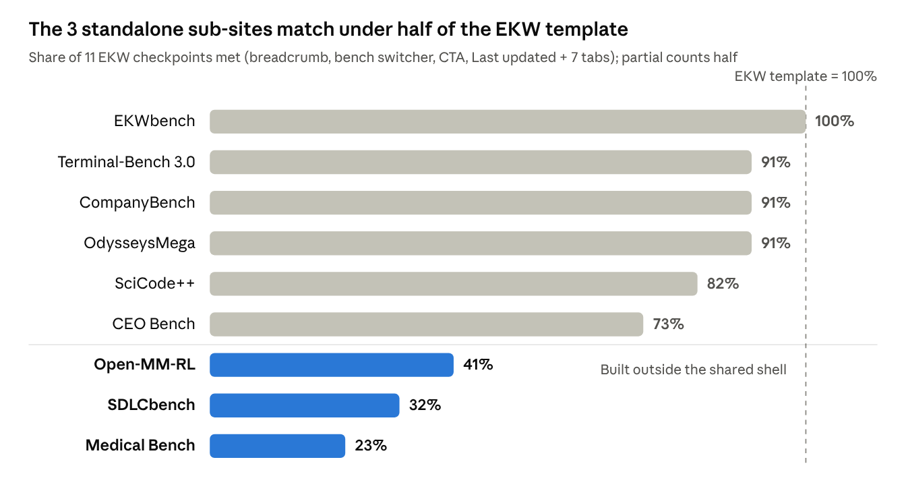
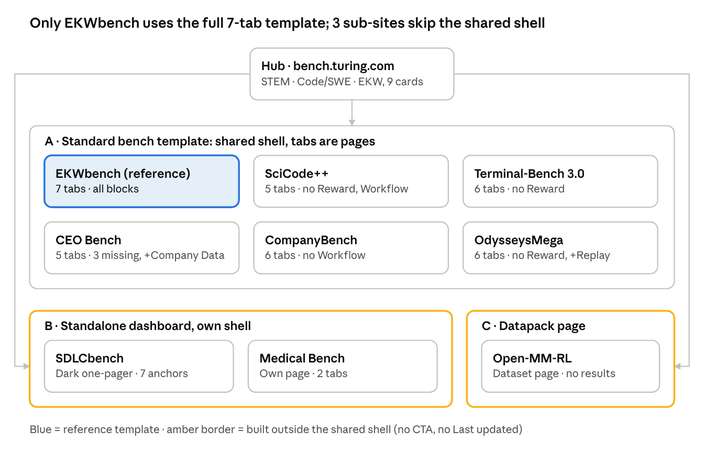
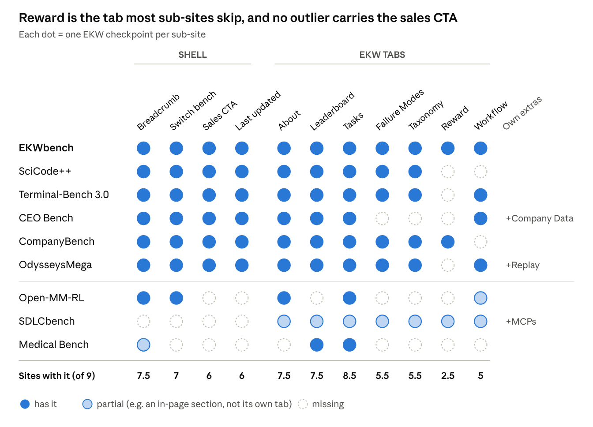
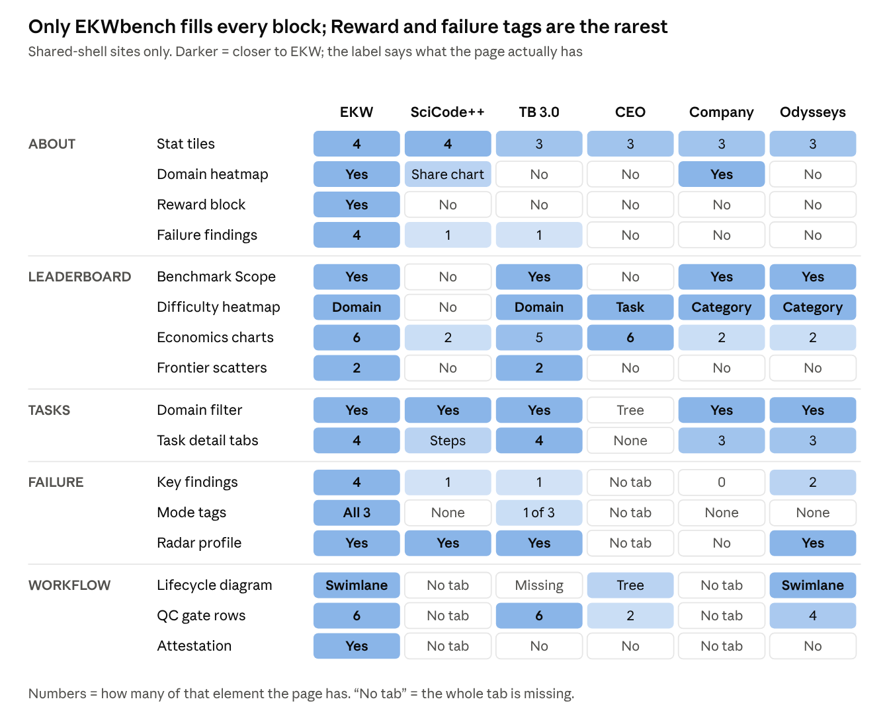
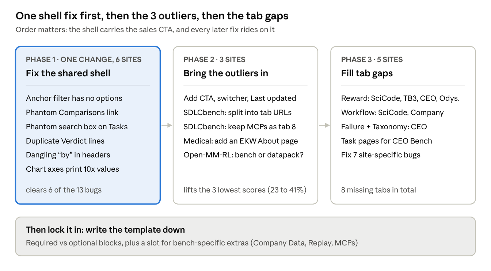

bench.turing.com: Sub-site Template Audit
bench.turing.com runs 9 sub-sites on 3 different templates, and only EKWbench uses the full reference template. Six sub-sites share one shell but ship 5 to 7 tabs each. Three sub-sites (SDLCbench, Medical Bench, Open-MM-RL) are standalone pages that break the shell entirely.
Position: move every sub-site onto the EKW shell and its 7-tab set. Fix the 3 outliers first, since all 3 drop the "Request dataset samples" CTA (and SDLCbench and Medical also drop the bench switcher), which is the commercial point of the site.
Scoreboard

The 6 shared-shell sites sit within 3 checkpoints of EKW; the gap is concentrated in 3 sites, so the fix is focused, not site-wide.
Site map

The hub lists all 9 benches as cards; the 6 in Family A share one shell, while SDLCbench, Medical Bench and Open-MM-RL each built their own.
Coverage grid

Holes cluster in two places: the Reward column, and the bottom three rows.
Depth grid

Terminal-Bench 3.0 is the deepest copy of EKW; CEO Bench is the thinnest, with 3 tabs absent and no task pages.
Recommended path to one template

Open question: should bench-specific extras (CEO's Company Data, Odysseys' Replay viewer) be promoted into the EKW template for everyone?
Details: every finding, in full
Template families
| Family | Sub-sites | What it is |
|---|---|---|
| A. Standard bench template | EKWbench, SciCode++, Terminal-Bench 3.0, CEO Bench, CompanyBench, OdysseysMega | Shared header, breadcrumb, bench switcher, CTA, multi-page tabs |
| B. Standalone dashboard | SDLCbench, Medical Bench | Own header and theme, one long page, no switcher or CTA |
| C. Datapack landing page | Open-MM-RL | Marketing page for a dataset, no leaderboard |
Scope: hub page, all 9 sub-site landing pages, and every tab page of EKWbench, plus Leaderboard, Tasks, a task detail page, Failure Modes, Taxonomy, Reward and Workflow pages across the Family A sites.
Shell: what wraps each sub-site
| Shell element | EKW (reference) | SciCode++ | TB 3.0 | CEO Bench | CompanyBench | OdysseysMega | SDLCbench | Medical | Open-MM-RL |
|---|---|---|---|---|---|---|---|---|---|
| Partner labels (MoonshotAI, Thinking Machines) | Yes | Yes | Yes | Yes | Yes | Yes + Superintelligent Agents logo | No | No | No |
| Breadcrumb (All benches / Bench / Page) | Yes | Yes | Yes | Yes | Yes | Yes | No | Partial (All benches / Medical Bench) | Yes |
| "Switch bench" dropdown | Yes | Yes | Yes | Yes | Yes | Yes | No | No | Yes |
| "Request dataset samples" CTA (header, body, footer) | 3x | 3x | 3x | 3x | 3x | 3x | None | None | None |
| "Anchor model" filter | Yes | Yes | Yes | Yes | Yes | Yes | No | No | No |
| Tabs are separate pages (URLs) | Yes | Yes | Yes | Yes | Yes | Yes | No, in-page anchors | No | No, in-page views |
| Theme | Light, serif | Light | Light | Light | Light | Light | Dark, gold accent | Light, red accent | Light, plus dark toggle |
| "Last updated" footer | Yes | Yes | Yes | Yes | Yes | Yes | No | No | No |
| Bench root URL | Redirects to /about/ | Redirects to /about/ | /about/ | /about/ | /about/ | /about/ | Is the page | Is the page | Is the page |
The EKW reference template
About page, in order (source)
- Hero: H1, one paragraph with corpus counts (191 tasks, 9 domains), 5 feature badges, harness list
- CTA card: "Interested in this benchmark?" + Request dataset samples
- Stat tiles (4): corpus tasks, measured tasks, models, trials per task
- Bar chart: task pass rate by model, link to Full leaderboard
- Heatmap: pass rate by domain x model, link to Full taxonomy
- Reward block: weighted partial credit explained, link to How reward works
- The Verdict: per-model one-liner with a best-model stat callout
- Failure Modes: 4 numbered findings, link to Explore failure modes
- The Evidence: 3 task cards with per-model bars, link to Explore all tasks
- Footer: repeat CTA + Last updated date
| Tab | Page anatomy |
|---|---|
| Leaderboard | 3 tiles (Total tasks, Best reward, Best value) · On-this-page jump list · expandable Model Scorecard · Benchmark Scope · 5 Aggregate Metric bars · Domain Difficulty heatmap · 6 Economics bars · 2 Frontier scatters |
| Tasks | Task Explorer title + counts · domain filter chips · result count · card grid (domain, ID, title, excerpt, verifier counts, per-model scores) |
| Task detail | 4 sub-tabs: Problem Statement, Task Package, Results, Trials · prompt · What it tests / How models fail / Why it matters · 4 stat cards (source files, deliverables, golden answer, verifiers) |
| Failure Modes | 4 numbered key findings · On-this-page TOC · 5 stage cards with modes tagged capability limit / harness-fixable / tradeoff · per-model dot strips · radar Failure profile with model and stage chips · incidence list |
| Taxonomy | H1 + 3 stat cards · anchor tree · definitions per domain with examples · Coverage matrix of input and output file types |
| Reward | Description / Reward explorer sub-tabs · verifier tiers · formula · weights · grading roles · Score anatomy worked example |
| Workflow & Quality | §1 Task lifecycle swimlane (4 lanes) · §2 QC gates table (6 rows) · §3 QC results stat cards · Attestation notice |
Which tabs exist
| Tab | EKW | SciCode++ | TB 3.0 | CEO | Company | Odysseys | SDLC | Medical | Open-MM-RL |
|---|---|---|---|---|---|---|---|---|---|
| About | Yes | Yes | Yes | Yes | Yes | Yes | Yes (anchor) | No | Overview |
| Leaderboard | Yes | Yes | Yes | Yes | Yes | Yes | Yes (anchor) | Yes | No |
| Tasks | Yes | Yes | Yes | Yes | Yes | Yes | Yes (anchor) | Yes | Task View |
| Failure Modes | Yes | Yes | Yes | No | Yes | Yes | Yes (anchor) | No | No |
| Taxonomy | Yes | Yes | Yes | No | Yes | Yes | Yes (anchor) | No | No |
| Reward | Yes | No | No | No | Yes | No | Yes (anchor) | No | No |
| Workflow & Quality | Yes | No | Yes | Yes | No | Yes | Inside page (Task lifecycle) | No | Methodology |
| Unique extra tab | None | None | None | Company Data | None | None | MCPs | None | None |
| Tab count | 7 | 5 | 6 | 5 | 6 | 6 | 7 (one page) | 2 | 3 |
About page blocks (Family A)
| EKW block | SciCode++ | TB 3.0 | CEO | Company | Odysseys |
|---|---|---|---|---|---|
| Hero + badges | Yes | Yes | Bullet list, not badges | Bullet list, not badges | Yes |
| Stat tiles | 4 | 3 | 3 | 3 | 3 |
| Pass-rate bar chart | Yes | Yes | Yes | Yes | Yes |
| Domain x model heatmap | Domain share chart instead | Missing | Missing | Yes | Missing |
| Reward block | Missing | Missing | Missing | Missing | Missing |
| The Verdict | "What the numbers say" | Yes | Yes | Yes | Yes |
| Failure findings | 1 | 1 | Missing | Missing | Missing |
| Evidence task cards | 3 | 3 | 3 | 3 | 3 |
| Extras not in EKW | Score tables, top subdomains, "How the pack is built" | Published-suite cards | None | None | Trajectory replay viewer |
Inner pages (Family A)
| Page part | EKW | SciCode++ | TB 3.0 | CEO | Company | Odysseys |
|---|---|---|---|---|---|---|
| Leaderboard tiles | 3 | 2 | 3 | 3 | 2 | 2 |
| Benchmark Scope | Yes | No | Yes | No | Yes | Yes |
| Difficulty heatmap | Domain | No | Domain | Task | Category | Category |
| Economics charts | 6 | 2 (tokens) | 5 | 6 | 2 (placeholder) | 2 (Run Effort) |
| Frontier scatters | 2 | No | 2 | No | No | No |
| Tasks domain filter | Yes | Yes | Yes | No (hierarchy tree) | Yes | Yes |
| Task cards shown / total | 3 / 69 | 5 / 3,451 | 6 / 100 | 20 / 20, no detail pages | 64 / 64 | 100 / 100 |
| Task detail sub-tabs | Problem, Package, Results, Trials | Main problem + Steps (no URLs) | Same as EKW | No task pages | No Package | Problem, Replay, Results |
| Failure: key findings | 4 | 1 | 1 | n/a | 0 | 2 |
| Failure: stages / modes | 5 / 20 | 4 / 8 | 7 / 22 | n/a | 2 / 6 | 4 / 5 |
| Failure: mode tags | All 3 types | None | Harness-fixable only | n/a | None | None |
| Failure: radar profile | Yes | Yes | Yes | n/a | No | Yes |
| Taxonomy coverage matrix | Yes | Not checked | No | n/a | Not checked | Not checked |
| Workflow §1 lifecycle | Swimlane | n/a | Missing | Decomposition tree | n/a | Swimlane |
| Workflow QC gates rows | 6 | n/a | 6 | 2 | n/a | 4 |
| Attestation notice | Yes | n/a | No | No | n/a | No |
Sub-site notes
| Sub-site | Template | How its About page tells the story | Biggest gap vs EKW |
|---|---|---|---|
| SciCode++ | A | 13 blocks: longest About page; adds score tables, top-subdomain links, 4 "How the pack is built" cards | No Reward or Workflow tab; leaderboard has no scope, heatmap or frontier |
| Terminal-Bench 3.0 | A | Hero "Hard for the right reasons", 3 tiles, chart, verdict, 1 failure finding, evidence, links to Harbor hub tasks | No Reward tab; taxonomy has no definitions; workflow starts at §2 |
| CEO Bench | A | Simulated company (Cirrus Sleep, Inc.) framing; adds a unique Company Data file browser (1,165 files) | No Failure, Taxonomy or Reward tab; 0 of 20 tasks have detail pages |
| CompanyBench | A | Closest About page to EKW: has the domain heatmap | No Workflow tab; failure page has no findings, TOC or radar; oldest update (2026-06-15) |
| OdysseysMega | A | Adds a trajectory replay viewer (model tabs, failures vs strong runs); task detail has a Replay tab | No Reward tab; no heatmap on About |
| SDLCbench | B | One dark dashboard: hero, 9 RL environment logos, Why this benchmark, leaderboard, failure findings, 8-tab task inspector, MCP Tool Explorer, swimlane, reward shaping | No hub shell at all: no breadcrumb, switcher, CTA or dates |
| Medical Bench | B | Own header ("Clinical reasoning dataset"), Leaderboard and Tasks views, task panel with Prompt, Datastore, Model Comparison, Model Insights | Only 2 tabs; no About story, CTA, failure, taxonomy or workflow |
| Open-MM-RL | C | Dataset sales page: "Trending #1 on Hugging Face", Pack at a glance (2,000 prompts, 3,060 images), landscape table vs SciFIBench, StepSTEM, HLE, domain and image-type charts, DataHub and Loom links | No leaderboard or model results; no CTA to the contact form |
Bugs found along the way
| Where | Bug | Scope |
|---|---|---|
| All leaderboards | "Comparisons" in the On-this-page list has no matching section | Template |
| All Family A pages | "Anchor model: All" filter shows no other options | Template |
| All Tasks pages | Copy says "the search box above" but no search box renders | Template |
| All Verdict blocks | Per-model lines repeat (best model listed twice); CEO calls every model "the strongest model" | Template |
| CompanyBench, CEO, Odysseys headers | Dangling "by" / "by×" text with no partner name | Template |
| EKW Workflow | Raw config string sections.workflow.attested_by shown to readers |
EKW |
| EKW Leaderboard | Two different Last updated dates (2026-08-21 and 2026-08-24); text says "five-task sample" vs 69 tasks | EKW |
| TB 3.0 About | Heading misspelt "Failue Modes" | TB 3.0 |
| TB 3.0 Workflow | 11 configs x 100 tasks x 8 = 8,800 attempts, page says 6,400; sections start at §2 | TB 3.0 |
| CompanyBench Reward | Says "two trials", shows 6 cards; trial_9 appears twice with different rewards; failed-check counts don't add up | CompanyBench |
| CompanyBench / CEO Economics | Axis maxima print 10x the value (630 vs 63; 1970 vs 197) | Chart component |
| SciCode++ Tasks | Chemistry card has no description and a stray "#" | SciCode++ |
| Hub page | SciCode++ and EKW hub links point to the bench root, which is a "Redirecting…" stub | Hub |